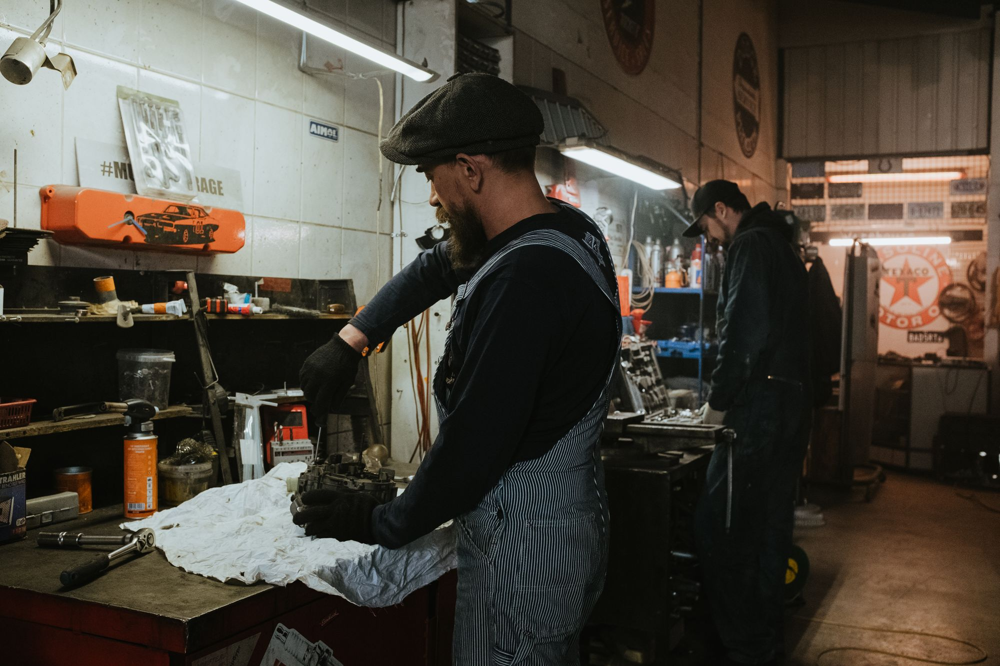
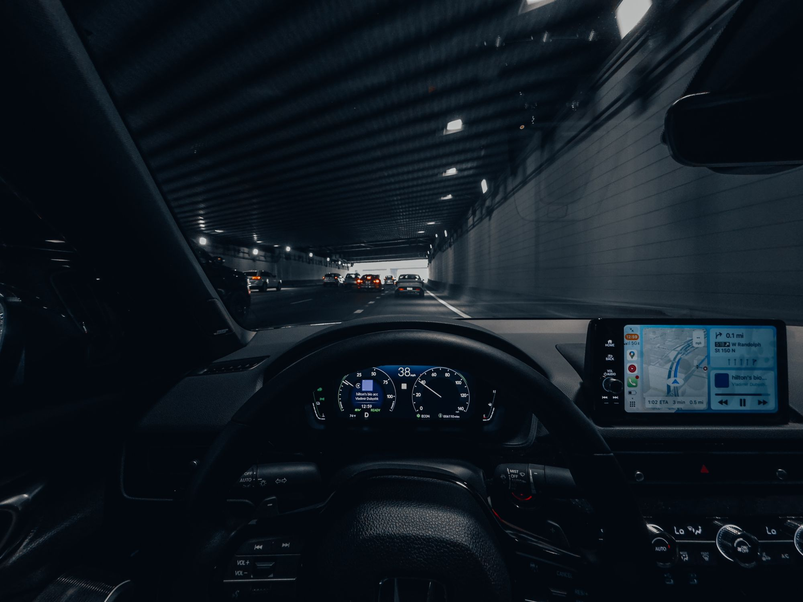

01 / Diagnóstico
Injeção Eletrônica
Diagnóstico computadorizado por scanner OBD-II, leitura de sensores em tempo real, limpeza ultrassônica e teste de bicos injetores GDI/MPI.
Oficina de família fundada pelos irmãos Bilecki na Av. Eng. George Corbisier. Três décadas e meia de honestidade técnica, scanners computadorizados de última geração e peças homologadas para mais de 20 montadoras.

Diagnóstico computadorizado por scanner OBD-II, leitura de sensores em tempo real, limpeza ultrassônica e teste de bicos injetores GDI/MPI.
Check-up de mais de 40 itens essenciais para segurança: bateria, alternador, velas de ignição, correias, filtros e luzes de advertência.
Troca de fluido com aditivo orgânico homologado, teste de estanqueidade sob pressão, substituição de radiadores, cavaletes d'água e válvulas termostáticas.
Óleos sintéticos rigorosamente adequados às normas da montadora (Dexos, VW, Fiat, Ford, API SP). Substituição dos filtros de óleo, ar e cabine.
Amortecedores pressurizados, molas, bandejas, buchas, pivôs, terminais de direção, discos ventilados e pastilhas cerâmicas silenciosas.
Troca de correia dentada e tensores, correntes de distribuição, junta de cabeçote, descarbonização de dutos e retífica de precisão.
Troca de kit de embreagem, atuadores hidráulicos, reparo de trambulador e substituição preventiva de fluido ATF por diálise computadorizada.
Do compacto urbano para o trânsito de São Paulo aos utilitários, SUVs e veículos importados de alta cilindrada.
Procedimento recomendado com base em boletins técnicos da montadora e equipamentos homologados.
Resposta em até 20 minutos durante horário comercial da oficina.

Uma oficina de família fundada pelos irmãos Bilecki: décadas de experiência unidas a técnicas e equipamentos de hoje.
O que começou no final dos anos 1980 como uma paixão genuína por mecânica e motores se transformou em um ponto de referência para motoristas do Jabaquara, Saúde e região de Santo Amaro.
Enquanto muitos centros automotivos apostaram em trocas desnecessárias de peças, a Omenauto construiu sua reputação com o caminho inverso: investigação criteriosa da falha, explicação transparente ao cliente e respeito absoluto ao veículo.
Trabalhamos com fornecedores homologados de primeira linha (Cofap, Nakata, Bosch, Delphi, Mahle, Motul, Mobil) para garantir que cada carro saia da oficina com a máxima confiabilidade.
“Levo meus carros na Omenauto há mais de 10 anos. Os irmãos Bilecki e a equipe têm uma honestidade que é raríssima no ramo automotivo. Se a peça tem conserto ou não precisa trocar, eles avisam. Recomendo de olhos fechados.”
“Meu carro estava falhando na aceleração e outra oficina queria trocar a bomba de combustível inteira. Trouxe na Omenauto e com o scanner descobriram que era apenas uma bobina de ignição com fuga de faísca. Resolveram no mesmo dia!”
“Fiz a revisão de 60 mil km com troca de correia, suspensão e troca de óleo. Tudo explicado item por item antes de começar o serviço e as peças velhas foram guardadas para eu ver. Trabalho impecável e preço justo.”
Localização privilegiada na Av. Eng. George Corbisier, com fácil acesso pelo Metrô Conceição e Jabaquara.